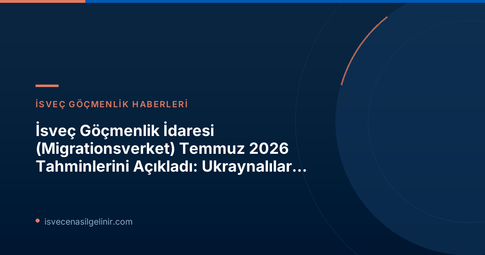

Migrationsverket Temmuz 2026 Tahminlerinin Detayları
İsveç Göçmenlik İdaresi'nin Temmuz ayında yayımladığı 2026 yılına ilişkin son göç tahmini, genel hatlarıyla önceki raporlara kıyasla küçük ayarlamalar içerse de, bazı önemli alanlarda dikkat çekici değişiklikler ve öngörüler sunuyor. Özellikle Ukrayna'dan gelen sığınmacılar, yeni AB göç ve iltica paktı, çalışma izinleri ve yeni yürürlüğe giren vatandaşlık yasası gibi konular ön plana çıkıyor.Ukraynalılar İçin Geçici Koruma Uzatması
AB Komisyonu'nun Haziran ayındaki önerisinin ardından, Migrationsverket, Ukrayna'dan kitlesel göç nedeniyle sağlanan geçici koruma direktifinin 4 Mart 2028'e kadar uzatılacağını öngörüyor. Nisan ayındaki tahminde bu korumanın Mart 2027'de sona ereceği varsayılırken, bu son güncelleme Ukraynalı savaş mağdurları için ek bir güvence sağlıyor. * **Güncel Beklenti:** Geçici koruma 4 Mart 2028'e kadar uzatılacak. * **2026 Başvuru Tahmini:** 1.000 kişilik bir artışla 10.000'e yükseltildi. * **2027 Başvuru Tahmini:** Yaklaşık 10.000 başvuru bekleniyor, ancak uzatmanın kesin şekli henüz belirlenmediği için bu rakamda yüksek bir belirsizlik bulunuyor.Yeni AB Göç ve İltica Paktı'nın Etkileri ve İstatistiksel Değişiklikler
Haziran 2026'da yürürlüğe giren AB Göç ve İltica Paktı, uluslararası koruma (eski adıyla iltica) süreçleri için kapsamlı yeni düzenlemeler ve tanımlar getirdi. Migrationsverket Planlama Direktörü Eric Ramstedt, yeni yasal çerçevenin istatistiklerde yeni kategorizasyonlar ve değişiklikler gerektirdiğini belirtiyor. Ancak, entegre istatistikler henüz tam olarak oluşturulamadığı için, güncel tahminlerin eski tanımlarla yapılmaya devam edildiği ifade ediliyor.İltica Başvurularında Azalma Eğilimi
İsveç'e yönelik uluslararası koruma (iltica) başvurularındaki düşüş trendinin devam edeceği tahmin ediliyor ve bu alandaki sayılar önceki tahmine göre bir miktar düşürüldü. Eric Ramstedt'e göre bu durum, hem AB genelinde daha az iltica başvurusu gelmesinden hem de İsveç'in kendi yasal düzenlemelerinin ülkeyi iltica edenler için daha az cazip hale getirmesinden kaynaklanıyor.Çalışma İzinlerinde Uzun Vadeli Artış Beklentisi
İlk kez İsveç'te çalışma izni arayanların sayısının 2027 yılında azalması bekleniyor. Ancak, 2028 yılı için ilk kez çalışma izni başvurularında belirgin bir artış öngörülüyor. Bu artışın temel nedeni, Ukraynalılar için geçerli olan geçici koruma direktifinin süresinin dolmasıyla birlikte, bu kişilerin daha düşük maaş gereklilikleri kapsamında çalışma iznine başvurabilecek olmalarıdır. Bu durum, nitelikli iş gücü göçmenliği için farklı dinamikler yaratabilir.Yeni Vatandaşlık Yasasının Büyük Etkisi
6 Haziran 2026'da yürürlüğe giren yeni vatandaşlık mevzuatı, vatandaşlık başvuruları üzerinde büyük bir etkiye sahip olacak. Migrationsverket, hem gelen hem de karara bağlanan vatandaşlık başvurusu sayılarında düşüş tahmin ediyor. Nisan 2026'daki tahmine göre 60.000 olan vatandaşlık başvuru tahmini, yeni yasa ile birlikte 48.000'e düşürüldü. Yasaların uzun vadeli etkisinin ne denli olacağı ise belirsizliğini koruyor. İsveç'te vatandaşlık almak isteyenlerin yeni şartları dikkatlice incelemesi ve süreçleri hakkında güncel bilgi alması kritik öneme sahiptir. Bu konuda daha fazla bilgi edinmek için sverigemedborgarskapsprov.com adresini ziyaret edebilirsiniz.Geri Dönüş ve Sınır Dışı Edilme Süreçlerinde Azalma
İltica başvuru sayılarındaki düşüşe paralel olarak, koruma başvurusu reddedilen kişilerin geri dönüş (sınır dışı edilme) sayılarında da azalma görülüyor. Bu rapor, tüm tahmin dönemi boyunca iltica ile ilişkili geri dönüşlerde bir düşüş öngörüyor. Yıl içindeki fiili çıkışların Orta Doğu'daki savaş nedeniyle ve Migrationsverket'in bazı genç yetişkinlerle ilgili kararları beklemede tutması gibi nedenlerle beklenenden düşük olduğu belirtildi. Gönüllü geri dönüş tahminleri, hem 2026 hem de 2027 için 200'er kişi azaltıldı. ---Migrationsverket Temmuz 2026 Tahminleri: Kilit Rakamlar Tablosu
Aşağıdaki tablo, Migrationsverket'in Temmuz 2026 tahminlerindeki önemli sayısal veriler ve Nisan 2026 tahminleriyle karşılaştırmasını sunmaktadır. Parantez içindeki rakamlar, Nisan 2026 tahminindeki 2026 yılı varsayımlarını göstermektedir.| Kategori | 2026 Tahmini (Temmuz) | Nisan 2026 Tahmini (2026 için) |
|---|---|---|
| Ukrayna'dan Koruma Arayanlar (Ana Senaryo) | 10.000 | 9.000 |
| İltica, İlk Kez Başvurular | 4.200 | 5.000 |
| İltica, Uzatma Başvuruları | 17.000 | 17.000 |
| Öğrenci İşleri (İlk Kez ve Uzatma) | 31.000 | 30.000 |
| Aile Birleşimi İşleri (İlk Kez ve Uzatma) | 59.000 | 61.000 veya 59.000 |
| İş Piyasası İşleri (İlk Kez ve Uzatma) | 70.000 | 70.000 |
| Vatandaşlık İşleri | 48.000 | 60.000 |
Referanslar
* Migrationsverket (2026). Få justeringar i juliprognosen. https://www.migrationsverket.se/nyhetsarkiv/nyhetsarkiv/2026-07-24-fa-justeringar-i-juliprognosen.html * sverigemedborgarskapsprov.comİsveç'e Göç Yolculuğunuz İçin Profesyonel Destek!
İsveç'e yerleşme, çalışma izni, aile birleşimi veya vatandaşlık süreçleri hakkında güncel ve doğru bilgiye mi ihtiyacınız var? Uzman danışmanlarımızla iletişime geçin ve sürecinizi kolaylaştırın.